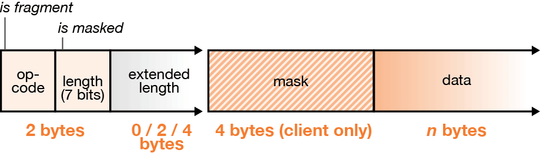

WebSocket 是定义服务器和客户端如何通过 Web 通信的一种网络协议。组成互联网的协议组通常由 IETF（互联网工程任务组）发布。2011 年 12 月，IETF 发布 RFC，对 WebSocket 协议（RFC 6455）做出了精确地规定，其中，包含了实现 WebSocket 客户端和服务器端时必须遵循的原则。
简介
WebSocket 为 Web 应用程序保留了我们所喜欢的 HTTP 特性（URL、HTTP 安全性、更简单的基于数据模型的消息和内置的文本支持），同时提供了其他网络架构和通信模式。和 TCP 一样，WebSocket 是异步的，可以用作高级协议的传输层。
WebSocket 为 Web 应用程序提供了 TCP 风格的网络能力。寻址仍然是单向的，服务器可以异步向客户端发送数据，但是只在 WebSocket 连接打开时才能做到。WebSocket 服务器也可作为 WebSocket 客户端。WebSocket 客户端不能接受不是由它建立的连接。
WebSocket 的层次在 TCP/IP 之上，更在 HTTP 之上。
下表比较了 TCP、HTTP、WebSocket 三者的主要特性：
| 特性 | TCP | HTTP | WebSocket |
|---|---|---|---|
| 寻址 | IP地址和端口 | URL | URL |
| 并发传输 | 全双工 | 半双工 | 全双工 |
| 内容 | 字节流 | MIME 消息 | 文本和二进制消息 |
| 消息定界 | 否 | 是 | 是 |
| 连接定向 | 是 | 否 | 否 |
WebSocket 连接握手
每个 WebSocket 连接都起始于一个 HTTP 请求。该请求类似普通的 HTTP 请求，但是其请求报文包含了一个特殊的头部字段名 Upgrade。这个字段名表示表示客户端将要把连接升级到一个不同的协议，这个协议就是 WebSocket 协议。
下面我们看一下具体的 HTTP 报文，使用 Chrome 或者 Firefox 打开 https://www.websocket.org/，在 Developer Tools 控制台输入以下代码：
|
|
以下是上面代码发起 WebSocket 连接所产生的 HTTP 请求报文：（摘自 Firefox Developer Tools，只列出部分数据）
|
|
下面是服务器的响应报文：
|
|
像这种要求升级为 WebSocket 连接的 HTTP 请求，一般称之为 WebSocket 初始握手。
与普通 HTTP 连接相比，对于 WebSocket 初始握手而言，HTTP 请求报文中还必需以下首部字段名：
Sec-WebSocket-VersionSec-WebSocket-KeyUpgrade：
响应报文中必需以下首部字段名：
101 Web Socket Protocol Handshake（服务器正常成功响应的情况下）Sec-WebSocket-AppectUpgrade
在成功升级协议之后，连接的语法切换为用于 WebSocket 消息的数据帧格式。
！！！注意 只有服务器响应 101 Web Socket Protocol Handshake、Upgarde: websocket 和 Sec-WebSocket-Accept，WebSocket 初始握手才能成功，才能建立起 WebSocket 连接。
计算响应键值
为了成功地完成 WebSocket 握手，WebSocket 服务器必须响应一个由客户端计算的键值。这个响应说明服务器理解 WebSocket 协议。没有精确响应，就可能诱导 HTTP 服务器意外地升级一个连接。
Sec-WebSocket-Accept 响应头部字段名的值从客户端 Sec-WebSocket-Key 请求头部字段名继承而来，包含一个特殊的响应键值，必须与客户端的预期精确匹配。
在服务器端，响应函数会从客户端发送的 Sec-WebSocket-Key 中取得键值，并在 Sec-WebSocket-Accept 中返回根据客户端预期计算出的匹配键值。
WebSocket Sec- 首部字段名
在 WebSocket 初始握手和响应键值的计算中，WebSocket 协议依靠 RFC-6455 中定义的 Sec- 首部字段名标志。下面列出了 RFC 6455 标准定义的 WebSocket Sec- 首部字段名，它们均是用于从客户端到服务器的 WebSocket 初始握手。其中有些是 HTTP 请求响应必需的，而有些是可选的。
Sec-WebSocket-Version：表示版本兼容性。RFC 6455 的版本总是 13。(必需)Sec-WebSocket-Key：避免跨协议攻击。在 HTTP 请求中只能出现一次。(必需)Sec-WebSocket-Accept：确认服务器理解 WebScoket 协议。在 HTTP 响应中只能出现一次。(必需)Sec-WebSocket-Extensions：用于初始握手过程中从服务器到客户端的响应，帮助客户端和服务器商定一组连接期间使用的协议集扩展。可能在 HTTP 请求中出现多次，但是在 HTTP 响应中只出现一次。(可选)Sec-WebSocket-Protocol：用于初始握手过程从服务器到客户端的响应。这个首部字段名告诉客户端应用程序可以使用的协议。(可选)
消息格式
Web Socket 连接所发送的消息，在网络上用二进制语法表示。这些二进制语法标记了消息的边界并包含了简介的类型信息。更准确地说，这些二进制标志字段标记了另一个单位——帧 之间的边界。帧是可以组成消息的部分数据。一个消息可以由多个帧构成，但通常来说，很少有一个消息使用超过一个帧。
下图是 WebSocket 帧的特征示意图：

WebSocket 帧头的二进制代码主要负责：
- 操作码
- 长度
- 解码文本
- 掩码
- 多帧消息
操作码
每条 WebSocket 消息都有一个指定消息载荷类型的操作码。操作码由帧头的第一个字节中最后 4bit 组成，值位数字类型。4bit 操作码共有 16 可能取值，WebSocket 协议只定义了 5 种。
| 操作码 | 消息载荷类型 | 描述 |
|---|---|---|
| 1 | 文本 | 消息数据类型为字符串 |
| 2 | 二进制 | 消息数据类型为二进制的 |
| 8 | 关闭 | 客户端或服务端向对方发送了关闭握手 |
| 9 | ping | 客户端或服务端向对方发送 ping |
| 10(十六进制 0xA) | pong | 客户端或服务端向对方发送 pong |
长度
WebSocket 协议使用可变位数来编码帧长度。
- < 126 字节的消息，长度用帧头前两个字节之一表示
- 126 ~ 216 字节的消息，使用额外的两个字节表示
- > 216 字节的消息，长度为 8 字节
长度编码保存于帧头第二个字节的最后 7bit。该字段中 126 和 127 两个值被当作特殊的信号，表示需要后面的字节才能完成长度解码。
解码文本
WebSocket 文本消息使用 UTF-8 编码，这是 WebSocket 文本消息允许的唯一编码。
掩码
从浏览器向服务器发送的 WebSocket 帧在实际内容之前还有一个 4字节的掩码，这是为了不常见的安全原因，以及改进与现有 HTTP 代理的兼容性。
WebSocket 协议要求客户端所发送的帧必需掩码，帧头在第二个字节的第一位表示该帧是否使用了掩码。
WebSocket 服务器接收的每个载荷在处理之前首先需要处理掩码，解除掩码之后，服务器将得到原始消息内容。二进制消息可以直接交付，文本消息将进行 UTF-8 解码并输出到字符串中。
多帧消息
帧格式中的 fin 标志位考虑了多帧消息或者部分可用消息的流化，这些消息可能不连续或者不完整。fin 标志位值为 0 表示当前帧不是消息的最后一帧，fin 标志位值为 1 表示当前帧是消息的最后一帧。
WebSocket 关闭握手
Web Socket 连接自身是可以在任何被关闭的，比如下层的 TCP 套接字突然关闭也会导致上层的 WebSocket 连接关闭。只有连接是由建立通信的双方在 WebSocket 层次上正常发起关闭的，那么才会以 WebSocket 关闭握手结束。
当进行 WebSocket 关闭握手时，终止连接的一端可以发送一个数字状态代码，以及一个表示关闭套接字原因的字符串。状态代码和原因编码为具有关闭操作码（8bit）的一个帧的载荷。数字代码用一个 16 位无符号整数表示，原因编码则是一个 UTF-8 编码的短字符串。RFC 6455 定义了多种特殊的关闭代码。代码 1000~1015 规定用于 WebSocket 连接层。这些代码表示网络中或协议中的某些故障。
下面列出了部分常用的 WebSocket 关闭握手代码：
| 代码 | 描述 | 使用场景 |
|---|---|---|
| 1000 | 正常关闭 | 会话成功完成时 |
| 1001 | 离开 | 应用程序离开且不期望后续连接尝试而关闭连接 |
| 1002 | 协议错误 | 协议错误而关闭连接 |
| 1003 | 不可接受的数据类型 | 应用程序接收到无法处理的意外类型消息 |
| 1007 | 无效数据 | 接收一个格式与消息类型不匹配的消息 |
| 1009 | 消息过大 | 接收消息太大，应用程序无法处理 |
| 1010 | 需要扩展 | 应用程序需要一个或多个服务器无法协商的特殊扩展时(客户端负责发送) |
| 1011 | 意外情况 | 应用程序由于不可预见的原因，无法继续处理连接 |
| 1015 | TLS失败(保留) | 不要发送这个代码。它用于表示 TLS 在 WebSocket 握手之前失败 |
对其他协议的支持
WebSocket 协议支持更高级的协议和协议商。在 WebSocket 客户端编程中，协议协商表现为 WebSocket 构造函数的第二个参数值。而在 HTTP 请求中，协议协商表示为可选 HTTP 首部字端 Sec-WebSocket-Protocol 的值。
服务器会根据客户端的 HTTP 请求中 Sec-WebSocket-Protocol 提供的协议来进行协议协商，然后将其选定的协议名作为 Sec-WebSocket-Protocol 的值在 HTTP 响应头中发给客户端。
扩展
不能同时协商多个协议，但是可以同时协商多个扩展。
HTTP 请求中可选的首部字段名 Sec-WebSocket-Extensions 用于扩展 WebSocket 协议，其值为所支持的扩展名称。
扩展可以为帧添加新的操作码和数据字段。